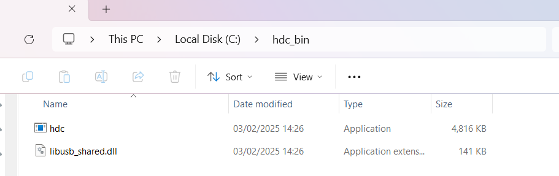
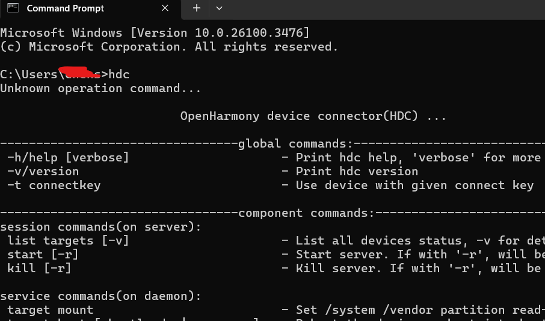
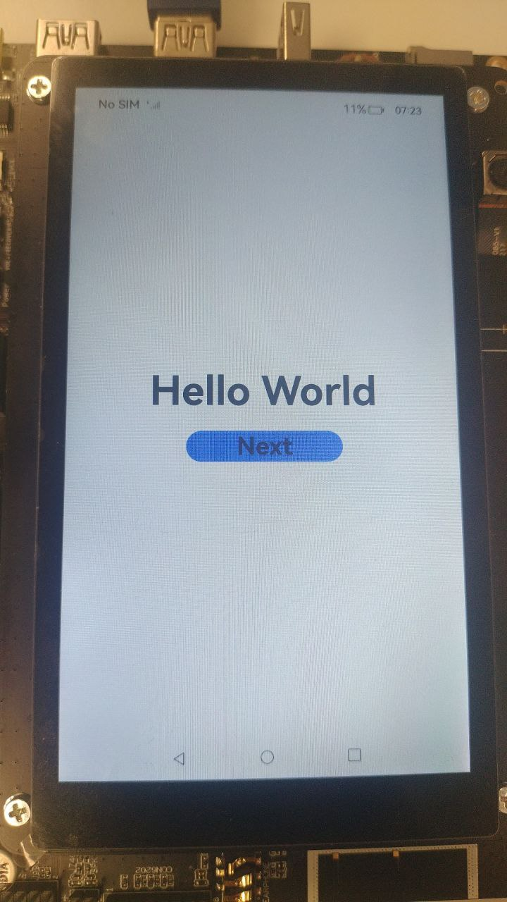

Running the Application on a Real Device
Install HDC
- Find the pipeline whose name is ohos-sdk-full or ohos-sdk-public, click Download Link, and select Full Package.
Note: You can skip this part if you followed the procedure from Environment Setup and Configuration tutorial.
Use conditional filtering, such as selecting the project as openharmony, selecting the target branch OpenHarmony-4.1-Release, selecting a date from the previous month, or manually choosing a range.
In the daily build or rolling build, find ohos-sdk-full_4.1-Release, and click on the download link to choose and download the full package, which includes Full-SDK for Windows and Linux. (If daily build SDK is not compatible with your version of DevEco Studio, try to use rolling build SDK instead)

- Under
toolchainfolder, findhdc.exeandlibusb_shared.ddl.
- Create a folder called
hdc_bin, you can create it wherever you like and puthdc.exeandlibusb_sharedinto that folder.

- Add Environment Variable
- Open
Settingson Windows system, typeenvironmentto searchEdit the system environment variablesand click it.
- Open

- Make sure the
System Propertieswindow is underAdvancedtab, clickEnvironment Variables...
- Double click
PathinSystem variablesarea. ClickNewon new pop-up window and paste yourhdc_binfolder path.
After that, clickOKfor all windows.

- Check whether the HDC is running properly You can open your
Command promptand typehdcto check.

Use real machine to run application with USB
- Connect the development board(Here I used
HiHope HH-SCDAYU200 Development Kit) running the OpenHarmony standard system to the computer and you can find the running device on the top part of the IDE.

- Generate signature.
- Click
Project Structure...icon on the top-right corner of the IDE, ChooseProject > Signing Configsand selectAutomatically generate signature. - Click
Applyand wait until the automatic signing is complete.
- Click

- You can find signed signature in
configurationfolder and openbuild-profile.json5file.

- Click
Run 'entry'triangle button.
- You can observe the application running on the board.

You learned about DevEco Studio and built your first Eclipse Oniro Application, congratulations!